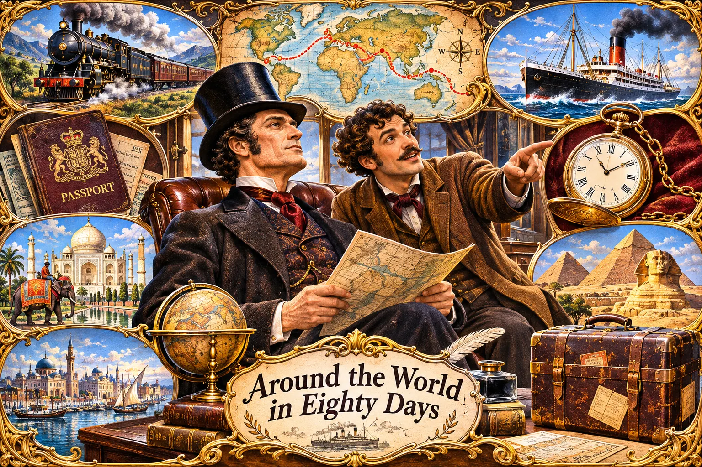
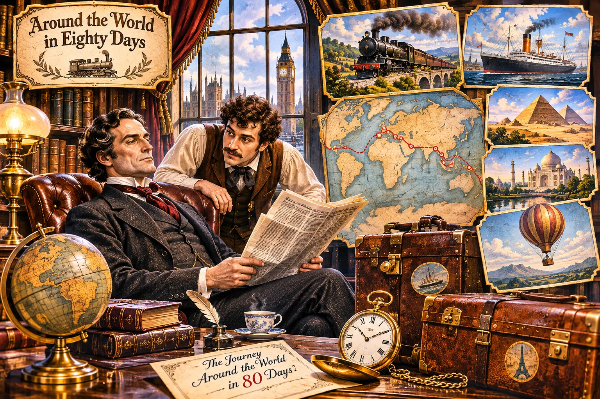
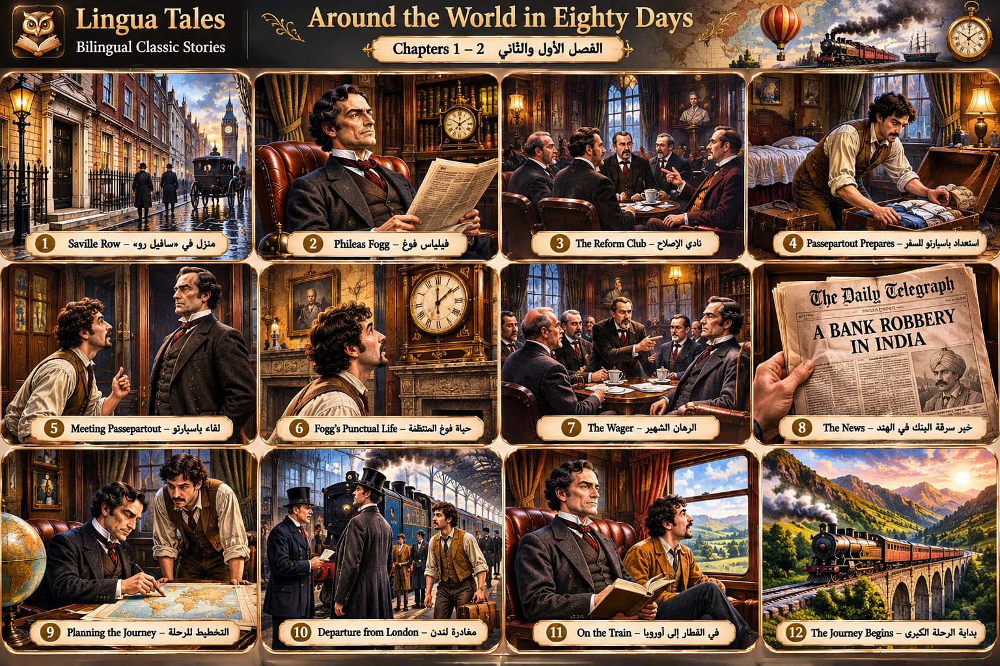

Grand illustrated travel motif: inspiring hero art, not a sourced scene
A decorative balloon and stylized route map appear: these are not evidence of how Fogg traveled; do NOT assign to a chapter passage.
🎨 3 لوحات فنية جديدة بدقة 1536×1024 — مراجع بصرية حديثة بالذكاء الاصطناعي وليست صورًا من الطبعات التاريخية. غير معتمدة للإدراج في فصول الرواية. بعض المشاهد والترتيب الزمني بحاجة لتصحيح قبل النشر.

A decorative balloon and stylized route map appear: these are not evidence of how Fogg traveled; do NOT assign to a chapter passage.

Passepartout/Fogg appearance is not fixed to a verified character reference; several travel vignettes are not in Chapters I–II.

Header says Chapters I–II but panels show Chapter III wager and Chapter IV departure; no panel is independently approved for the reader.
كل الصور من الملفات المحلية · لا إنترنت · لا تغيير لنص الرواية أو بيانات التطبيق · Modern AI artwork only